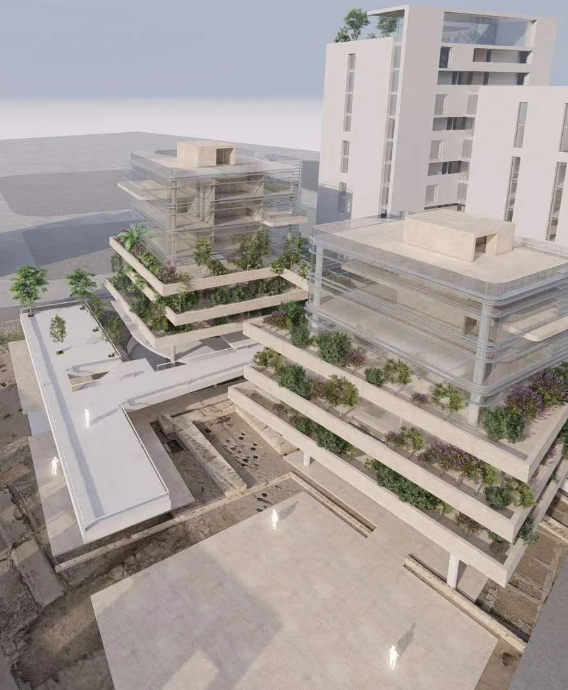
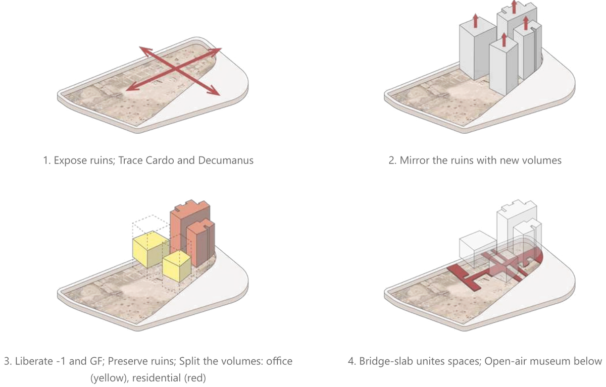
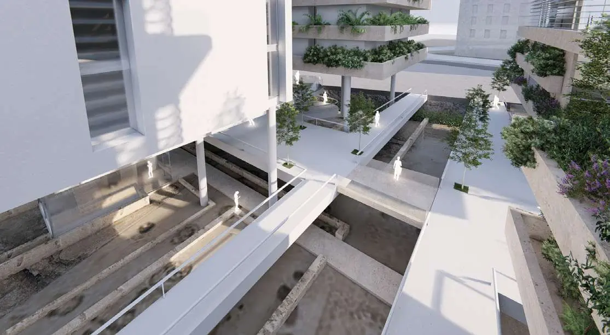
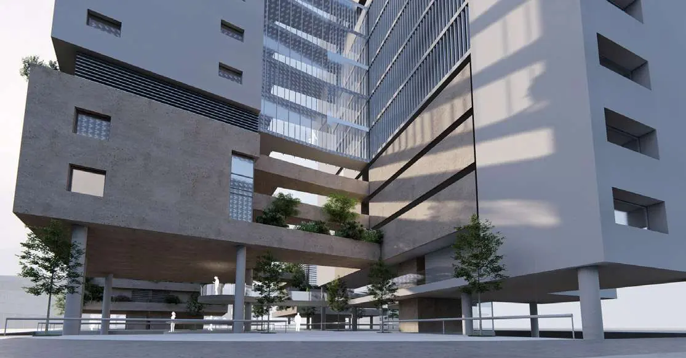
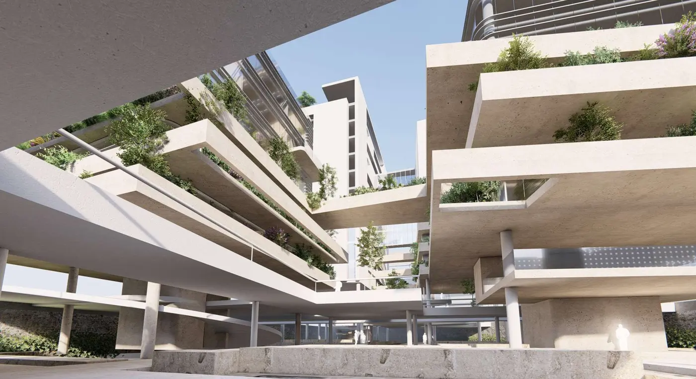

Speculum
Two residential and two office buildings joined by bridges, rising above the Roman Cardo and Decumanus ruins.

“A modern mirror and a continuation of the existing archeology of the site.”

Every new gesture is drawn from the past.




Master’s ThesisM.Sc. Year 2
→All projectsContact
Florence, Italy
Emaildanieleantar@gmail.com
Phone+39 351 728 3226
LinkedInlinkedin.com/in/danielle-antar
CityFlorence, Italy